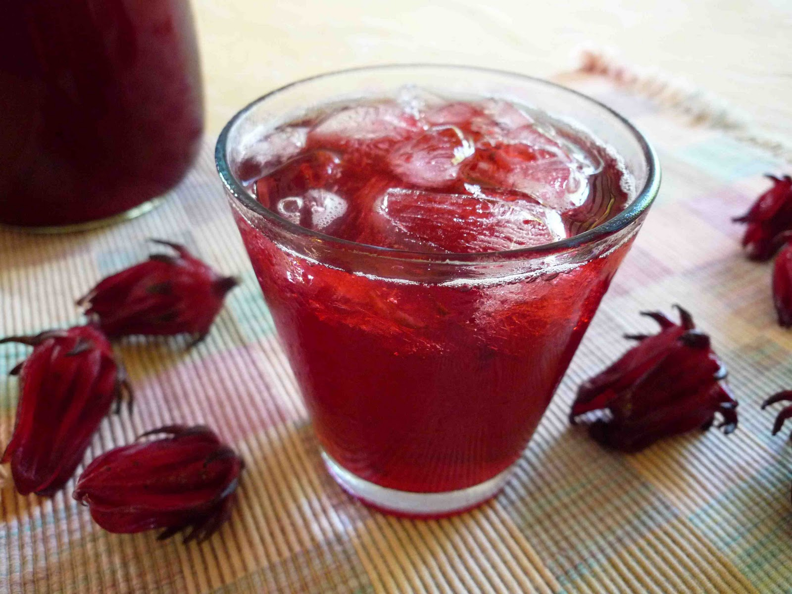

Sorrel

Description
Sorrel ws a spiced floral drink whose dark red or burgundy colour appropriately matches the season in which its most consumed
Ingredients
- 2 cups dried sorrel buds
- 1 cup sugar
- 1½ cup grated ginger
- 1 lime
- 1 cinnamon stick
- 1½ cup grated orange zest (optional)
- 3 whole cloves
- 3 whole cloves
- 2 cups water
Steps
- Boil 2 cups of water
- Place 1 cup of sugar in a jug and add boiling water
- Stir until the sugar dissolves
- In a large bowl, place the following
- Dried sorrel buds
- Grated ginger
- Juice of one lime
- Cinnamon stick
- Gently pour boiled water and sugar mixture into the bowl.
- Steep for approx. 45 minutes
- Refrigerate for 24-48 hrs (Optional)
- Strain when ready to serve
- Serve as desired, with or without ice